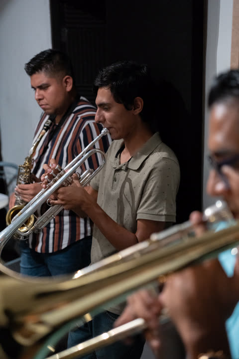
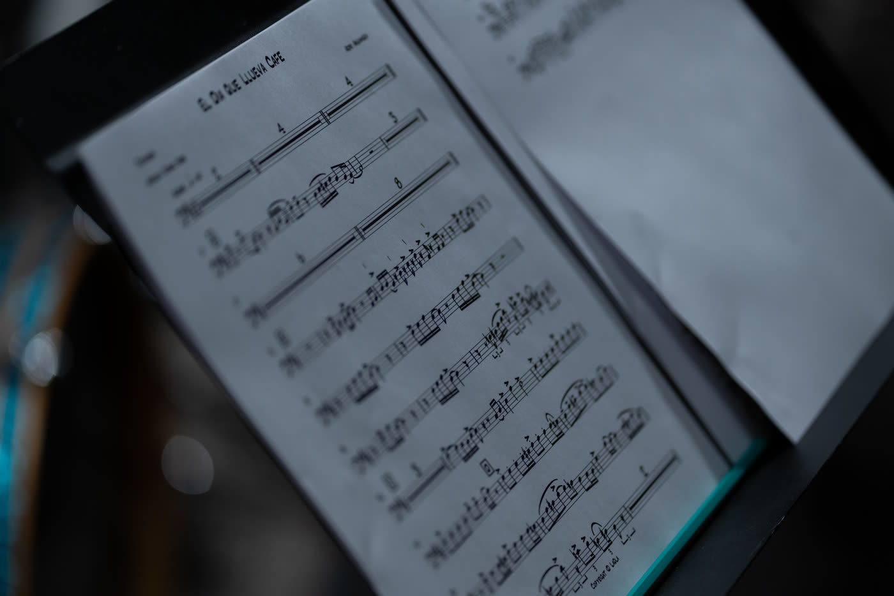
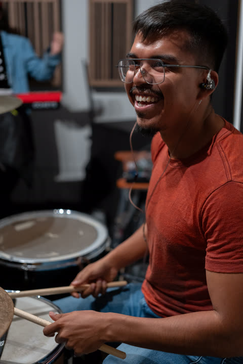
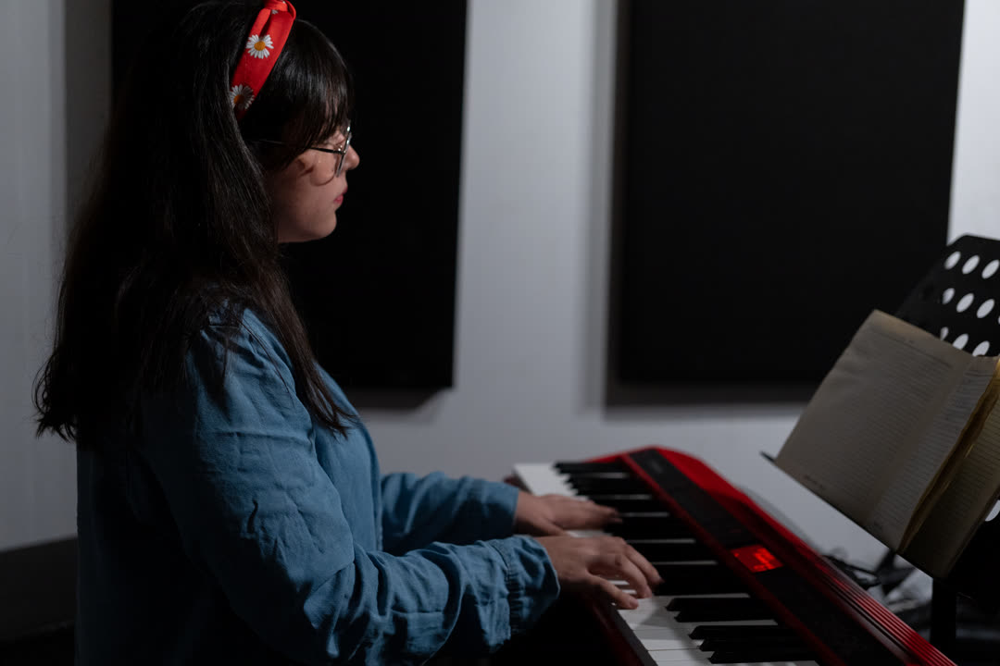
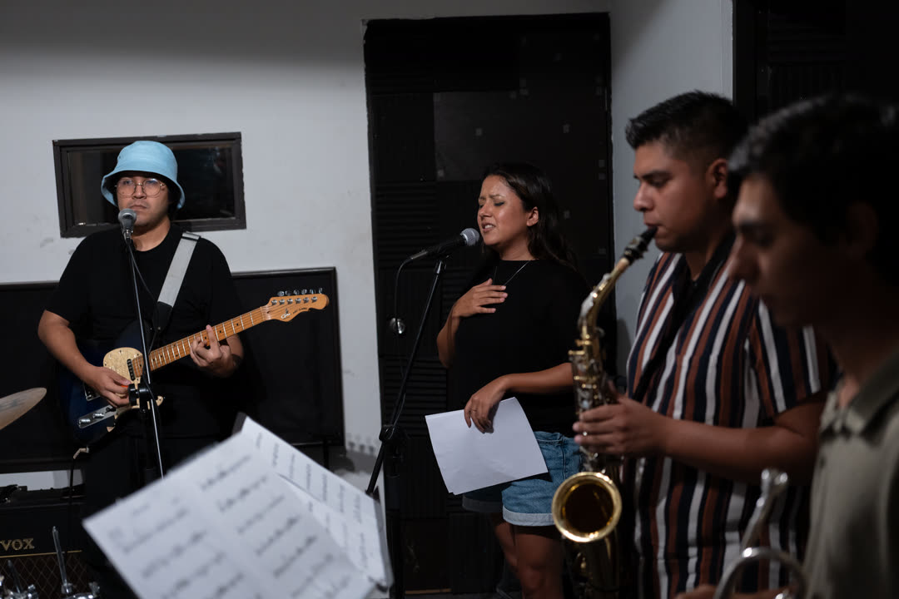
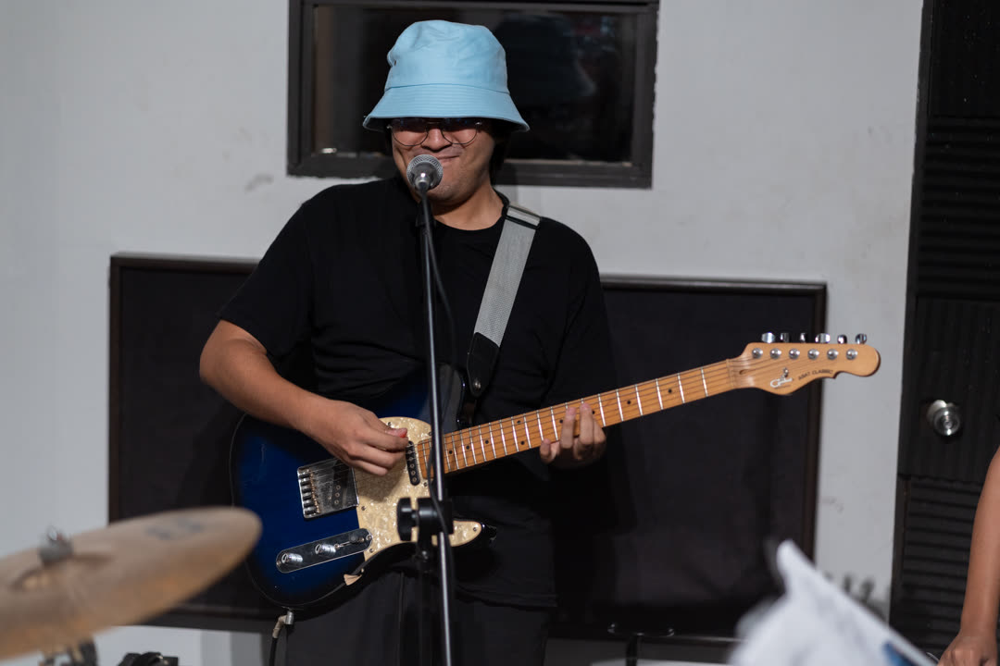
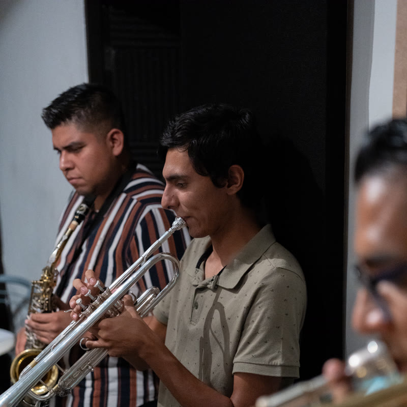

Tu idea
Nos mandas lo que tengas: un voicenote, una melodía, una referencia. No necesitas saber nada de música, composición o producción.
Desarrolladora de proyectos musicales · Arte 100% humano
Una melodía en la regadera, un voicenote a las 3am, una idea para una canción que no te deja en paz. Musicalización para cualquier proyecto. Tú tienes la idea; nosotros la llevamos al siguiente nivel.
Marea alta·Tsunami de ideas·Calma
Acto I — Marea alta de inspiración
Una canción no existe hasta que alguien compone, arregla y ordena los sonidos. Eso hacemos: tomamos lo que tienes —una idea, una emoción, una semilla— y la cultivamos hasta convertirla en una obra musical terminada. No necesitas saber de música ni coordinar a nadie. Solo traer la idea.
Detrás de cada obra hay una persona, no un algoritmo. Una máquina hace lo que le pides, pero no siente el amor ni la tristeza como tú los sientes, no tiene identidad y no puede ponerlo en tu música. Nosotros sí. Ese es nuestro diferenciador.
Acto II — Tsunami de ideas
Piénsalo como construir una casa. Tú dices cómo la quieres; nosotros, con oficio y herramientas, la levantamos. Verás cómo va tomando forma hasta que tienes la llave en la mano.
Nos mandas lo que tengas: un voicenote, una melodía, una referencia. No necesitas saber nada de música, composición o producción.
Nos sentamos contigo a entender tu idea y hacia dónde quieres llevarla. Definimos el rumbo: arreglos, instrumentación, estructura.
Construimos una maqueta para que escuches tu idea cobrando forma. Aquí ves los primeros frutos de algo que antes solo vivía en tu cabeza.
Músicos de sesión reales, dirección musical y estudio. En el estudio nacen cosas nuevas: ahí la obra se multiplica.
Mezcla, master y la obra terminada, lista para el mundo. La llave de tu casa en tus manos, lista para disfrutar.
Escucha los resultados ↓Nos mandas lo que tengas: un voicenote, una melodía, una referencia. No necesitas saber nada de música, composición o producción.
Nos sentamos contigo a entender tu idea y hacia dónde quieres llevarla. Definimos el rumbo: arreglos, instrumentación, estructura.
Construimos una maqueta para que escuches tu idea cobrando forma. Aquí ves los primeros frutos de algo que antes solo vivía en tu cabeza.
Músicos de sesión reales, dirección musical y estudio. En el estudio nacen cosas nuevas: ahí la obra se multiplica.
Mezcla, master y la obra terminada, lista para el mundo. La llave de tu casa en tus manos, lista para disfrutar.
Acto III — Calma después de la tormenta
El proceso completo, documentado. Y el resultado, para escuchar.
Adri llegó con poemas, canciones y una época oscura que necesitaba salir. No sabía de qué género ni hacia dónde. Juntos encontramos su identidad y ella decidió cada paso.
Otro proyecto producido por Daniel RoHe. La prueba de que el proceso se adapta a cada artista, no al revés.
“No puedo creerlo: todo empezó desde un voicenote y ahora suena a una producción increíble y trascendental.”






Sesiones reales, músicos reales. Fotografía: Leo.
El equipo
Sesión real · Dirección musical
Voces, metales, cuerdas: alguien tiene que escucharlo todo y cuidar tu idea en el centro. Esto no es un banco de imágenes — es Daniel dirigiendo una sesión real, de un proyecto real.

Multi-instrumentista · Arreglista · Director musical · Compositor
Multi-instrumentista con más de 15 años de experiencia en la escena como arreglista, director musical y compositor. Tu asesor. Su trabajo es entender tu idea, cuidarla y ayudarte a llevarla a su máximo potencial. La estrella siempre eres tú.

Sesión · Monterrey
Basta de buscar músicos por tu cuenta sin conocer sus referencias, su nivel o su profesionalismo. Nosotros ya los tenemos, ya los conocemos, ya confiamos en ellos —los que tocan impecable, cumplen y saben bajar el ego para que la música viva.
Empieza tu obra
Trae lo que tengas. Nosotros nos encargamos del resto.
Cualquier idea es valiosa. Dejar que se quede en el clóset de la mente hará que la pierdas para siempre. Atrévete a dar el paso cuando estés listo, aquí estaremos para ayudarte a navegar.
o escríbenos directo por WhatsApp →